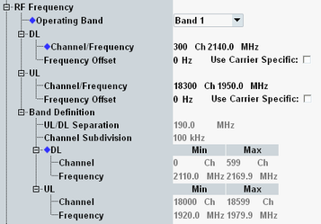

This section configures the operating band and the channel/frequency for uplink and downlink.
The uplink settings configure the center frequency of the RF analyzer. The downlink settings configure the carrier center frequency of the generated LTE signal.
If option R&S CMW-KS525 is available, a user-defined band can be specified and used.
For carrier aggregation scenarios, you can configure the settings per component carrier.

To specify the DL and UL frequencies, select an operating band first, then enter a valid channel number or frequency for UL or DL. The related frequency or channel number and the parameters for the other direction are calculated automatically.
For bands with configurable UL/DL separation like band 70, set also "UL/DL Separation".
For carrier aggregation, select different DL channels for the carriers. The channels must not overlap and can be located in the same band or in different bands. For co-location, see "RF Paths and Co-Location".
The relation between operating band, carrier frequencies and channel numbers is defined by 3GPP (see "Operating Bands"). You can define an additional band if option R&S CMW-KS525 is available, see "Band Definition".
You can change the operating band and the channels in all main connection states. In state "Connection Established" you can either change one parameter directly or you can perform a handover to reconfigure several parameters, see "Handover".
If you have configured intraband contiguous uplink carrier aggregation, the settings of all aligned component carriers are grayed out. Only the settings of the master carrier are configurable. See also "Intraband Contiguous UL".
Remote command:You can specify positive or negative offsets to be added to the carrier center frequencies. This setting is useful, for example, if the UE has a frequency offset relative to the channels defined by 3GPP.
To configure different PCC and SCC settings for carrier aggregation scenarios, enable "Use Carrier Specific".
Remote command:Displays the definition of the selected operating band. Operating band "User-Defined" can be edited.
Option R&S CMW-KS525 is required for user-defined bands.
FDL - FUL
This setting is configurable for user-defined bands, even for TDD. And it is configurable for band 70.
Remote command:Displays the spacing between center frequencies of two adjacent channels, always 100 kHz - also for user-defined bands.
Frequency band indicator identifying a user-defined band in signaling messages. The value is sent to the UE via broadcast in system information block 1. It is also used in handover messages.
Remote command:For user-defined PCC or SCC channels, you can edit the minimum DL channel number, the maximum DL channel number and the minimum DL center frequency.
The maximum DL center frequency is calculated automatically according to the "Channel Subdivision".
Remote command:Plus corresponding PCC commands.
For user-defined PCC channels, you can edit the minimum UL channel number and thus the relation between DL and UL channel numbers.
The other UL settings are calculated automatically according to the DL settings and the "UL/DL Separation".
Remote command:Plus corresponding PCC commands.